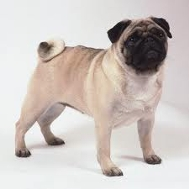

<table border="0" class="layout">
    <colgroup span="1"><col width="25%" span="1"></col><col width="75%" span="1"></col></colgroup> 
    <tbody>
        <tr>
            <td valign="top">
                <div class="holster">
                    <div class="block_container s3 b-text b-static-text user_css_12816005438" id="e_127779741252">
                        <p><em><strong>Ивлиева Романа</strong></em></p>
                        <p>тел. 732-07-51</p>
                    </div>
                    <div class="block_container s3 b-image txt-center" id="e_1282730330595"><span></span></div>
                </div>
            </td>
            <td>
                <div class="holster">
                    <div class="block_container s3 b-text b-static-text user_css_12816005438" id="e_12827302905">
                        <p style="text-align: center;"><span style="color: #0000ff;"><span style="color: #0000ff;"><span style="color: #0000ff;"><strong>Мопс</strong></span></span></span></p>
                        <p style="text-align: justify;"><span style="color: #0000ff;"><span style="color: #0000ff;"><span style="color: #0000ff;"><strong>Из истории породы</strong></span><span style="color: #006600;"><strong><span style="color: #0000ff;">:</span> </strong></span></span><span style="color: #006600;"><span style="color: #0000ff;">по-английски этих собак с 18 века называют pug - древним словом, обозначающим гнома, приплюснутый нос или маленькую обезьянку. Родословное древо мопса - вопрос спорный. Некоторые специалисты считают, что его родина - Нидерланды, куда он был завезён с Дальнего Востока голландскими купцами. Возможно, происхождение мопса действительно восточное (короткошерстный родственник пекинеса), но, по мнению других кинологов, мопс - результат скрещивания мелких бульдогов. Согластно ещё одной теории, это миниатюрный вариант редкого французского мастифа, так называемого бордоского дога. Мопсов обожал художник Хогарт, изображавший своего любимца Трампа на нескольких картинах. С 16 века эта собака стала излюбленным украшением европейских дворов.</span> </span></span></p>
                        <p style="text-align: justify;"><span style="color: #006600;"><span style="color: #0000ff;"><strong>Общая характеристика:</strong> характер уравновешенны, независимый, доброжелательный. Собаки энергичны и отважны. Ласковы и привязчивы, им необходима компания хозяина. </span></span></p>
                        <p style="text-align: justify;"><span style="color: #006600;"><span style="color: #0000ff;"><strong>Содержание и уход:</strong> при его энергии мопсу необходимо двигаться больше, чем многим другим мелким собакам. Но всё-таки водить его лучше на поводке и не допускать переутомления во избежания проблем с дыханием. Вполне достаточно каждый день расчёсывать собаку щёткой.</span></span></p>
                        <p style="text-align: justify;"><span style="color: #006600;"><span style="color: #0000ff;"><strong>Размеры:</strong> вес - 6-8 кг.</span></span></p>
                        <p style="text-align: justify;"><span style="color: #006600;"><span style="color: #0000ff;">_______________________________________</span></span></p>
                        <p style="text-align: justify;"><span style="color: #006600;"><span style="color: #0000ff;"><a href="http://www.dog.blister.ru/"></a></span></span></p>
                    </div>
                </div>
            </td>
        </tr>
    </tbody>
</table>​
